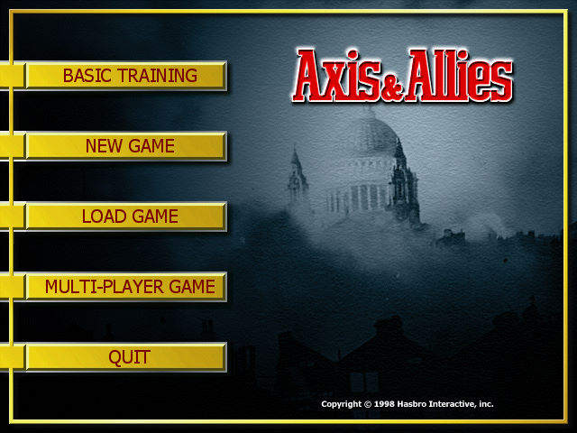
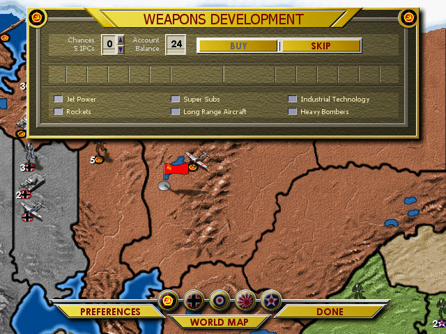
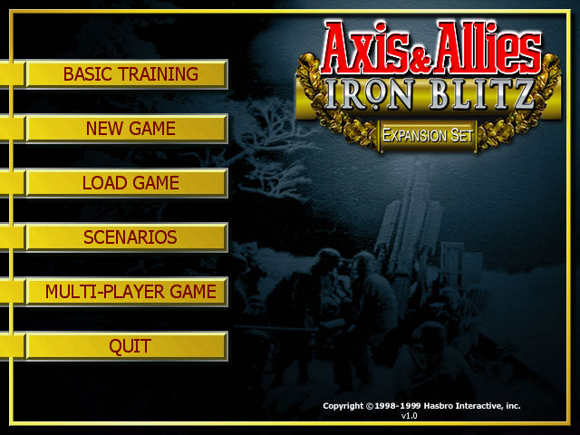

名稱：軸心國與同盟國／軸心國的戰鬥 (Axis & Allies，英文版)
簡介：Meyer 1998年出品的回合制戰術遊戲，改編自同名桌遊，由Hasbro代理發行。1999年
推出第二版「鋼鐵閃電戰（Iron Blitz）」，增加了遊戲規則與一些特性 [待補]。



保護：光碟，第二版破解碼：
axis.exe
75 40 6A 15
EB -- -- --
74 2B 50 8D
EB -- -- --